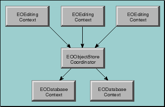

Framework:
com.apple.client.eocontrol (Java Client)
com.apple.yellow.eocontrol (Yellow Box)
System/Developer/Java/Headers
The EOInterface framework defines one of the layers of the Enterprise Objects Framework architecture-the control layer. It provides an infrastructure for enterprise objects that is independent of your application's user interface and its storage mechanism. The control layer dynamically manages the interaction between enterprise objects, the access layer, and the interface layer by:
| Responsibility | Classes |
|---|---|
| Tracking Enterprise Objects ChangesEOControl | EOObserverCenter EODelayedObserverQueue EODelayedObserver EOObserverProxy EOObserving (interface) |
| Object Storage Abstraction | EOObjectStore EOCooperatingObjectStore (Yellow Box only) EOObjectStoreCoordinator (Yellow Box only) EOGlobalID EOKeyGlobalID EOTemporaryGlobalID |
| Query specification | EOFetchSpecification EOQualifier EOSortOrdering |
| Interaction with enterprise objects | EOClassDescription (validation) NSObjectAdditions (basic enterprise object behavior) |
| Simple source of objects (for display groups) | EODataSource, EODetailDataSource |
The following sections describe each responsibility in greater detail.
Tracking Enterprise Objects Changes
EOControl provides four classes and an interface that form an efficient, specialized mechanism for tracking changes to enterprise objects and for managing the notification of those changes to interested observers. EOObserverCenter is the central manager of change notification. It records observers and the objects they observe, and it distributes notifications when the observable objects change. Observers implement the EOObserving interface, which defines one method, objectWillChange . Observable objects (generally enterprise objects) invoke their willChange method before altering their state, which causes all observers to receive an objectWillChange message.
The other three classes add to the basic observation mechanism. EODelayedObserverQueue alters the basic, synchronous change notification mechanism by offering different priority levels, which allows observers to specify the order in which they're notified of changes. EODelayedObserver is an abstract superclass for objects that observe other objects (such as the EOInterface layer's EOAssociation classes). Finally, EOObserverProxy is a subclass of EODelayedObserver that forwards change messages to a target object, allowing objects that don't inherit from EODelayedObserver to take advantage of this mechanism.
The major observer in Enterprise Objects Framework is EOEditingContext, which implements its objectWillChange method to record a snapshot for the object about to change, register undo operations in an NSUndoManager, and record the changes needed to update objects in its EOObjectStore. Because some of these actions-such as examining the object's new state-can only be performed after the object has changed, an EOEditingContext sets up a delayed message to itself, which it gets at the end of the run loop. Observers that only need to examine an object after it has changed can use the delayed observer mechanism, described in the EODelayedObserver and EODelayedObserverQueue class specifications.
Object Storage Abstraction
The control layer provides an infrastructure that's independent of your application's storage mechanism (typically a database) by defining an API for an "intelligent" repository of objects, whether it's based on external data or whether it manages objects entirely in memory. EOObjectStore is an abstract class that defines that basic API, setting up the framework for constructing and registering enterprise objects, servicing object faults, and committing changes made in an EOEditingContext. Subclasses of EOObjectStore implement the API in terms of their specific storage mechanism.
Subclasses of EOObjectStore
EOEditingContext is the principal subclass of EOObjectStore and is used for managing objects in memory. For stores based on external data, there are several subclasses. EOCooperatingObjectStore defines stores that work together to manage data from several distinct sources (such as different databases). The access layer's EODatabaseContext is actually a subclass of this class. A group of cooperating stores is managed by another subclass of EOObjectStore, EOObjectStoreCoordinator. If you're defining a subclass of EOObjectStore, it's probably one based on an external data repository, and it should therefore inherit from EOCooperatingObjectStore so as to work well with an EOObjectStoreCoordinator-though this isn't required.
EODatabaseContext provides objects from relational databases and is therefore provided by Enterprise Objects Framework's access layer. It is the class that defines the interaction between the control and access layers. Database contexts and other object stores based on external data are often shared by several editing contexts to conserve database connections.
Object store subclasses cooperate with one another as illustrated in the following:

Note that EOCooperatingObjectStore, EOObjectStoreCoordinator, and EODatabaseContext are not provided by Java Client.
Registering Enterprise Objects
An object store identifies its objects in two ways:
A global ID is defined by three classes: EOGlobalID, EOKeyGlobalID, and EOTemporaryGlobalID. EOGlobalID is an abstract class that forms the basis for uniquing in Enterprise Objects Framework. EOKeyGlobalID is a concrete subclass of EOGlobalID whose instances represent persistent IDs based on the access layer's EOModel information: an entity and the primary key values for the object being identified. An EOTemporaryGlobalID object is used to identify a newly created enterprise object before it's saved to an external store. For more information, see the EOGlobalID class specification.
Servicing Faults
For external repositories, an object store might delay fetching an object's data, instead creating an empty enterprise object (called a fault). When a fault is accessed (sent a message), it triggers its object store to fetch its data and fill the fault with its data. This preserves both the object's reference and its EOGlobalID, while saving the cost of fetching data that might not be used. Faults are typically created for the destinations of relationships for objects that are explicitly fetched. See the EOFaultHandler class specification for more information.